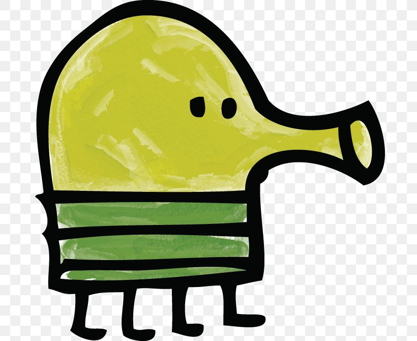

<!DOCTYPE html>
<html>
<head>
    <meta charset="utf-8" />
    <title>Doodlejump by Laure-Anne</title>
    <style>
      * { padding: 0; margin: 0; }
      canvas { background: #00BFFF; display: block; margin: 0 auto; }
	  canvas { border: solid 2px black ; }
	  
    </style>
</head>
<body>

<canvas id="myCanvas" width="480" height="320"></canvas>

<script>

//base
var canvas = document.getElementById("myCanvas");
var ctx = canvas.getContext("2d");
var x = canvas.width/2;
var y = canvas.height-40;
var dx = 0;
var dy = 0;
//dimmension du perso
var paddleHeight = 30;
var paddleWidth = 75;
var paddleX = (canvas.width-paddleWidth)/2;
//etat des touche (droite et gauche)
var rightPressed = false;
var leftPressed = false;
//image
var imagejavascript = document.createElement("perso.jpg");
imagejavascript.src = "code/doodle/perso.jpg"
document.body.appendChild(imagejavascript)
//image 2



//averti le changement d'étatt des touches
document.addEventListener("keydown", keyDownHandler, false);
document.addEventListener("keyup", keyUpHandler, false);

//constante pour les plateformes
const platformWidth = 65;
const platformHeight = 20;
const platformStart = canvas.height - 50;
// minimum and maximum vertical space between each platform
const minPlatformSpace = 15;
const maxPlatformSpace = 20;
//pour la première plateforme
var platforms = [{
  x: canvas.width / 2 - platformWidth / 2,
  y: platformStart
}];
//image du perso
function createperso() {
	imagejavascript.appendChild('perso.jpg');
}

/*
ctx.drawImage(image, dx, dy);
ctx.drawImage(image, dx, dy, dLargeur, dHauteur);
ctx.drawImage(image, sx, sy, sLargeur, sHauteur, dx, dy, dLargeur, dHauteur);
*/
//image du perso
let img = new Image();   // Crée un nouvel élément img
img.src = 'https://www.google.com/url?sa=i&url=https%3A%2F%2Fwww.pngwing.com%2Fen%2Fsearch%3Fq%3Ddoodle%2BJump&psig=AOvVaw1C0FDiVT2fkRyAiYUJk4CO&ust=1686001767078000&source=images&cd=vfe&ved=0CBEQjRxqFwoTCKj_x5fMqv8CFQAAAAAdAAAAABAE';
	
//data:image/gif;base64,R0lGODlhCwALAIAAAAAA3pn/ZiH5BAEAAAEALAAAAAALAAsAAAIUhA+hkcuO4lmNVindo7qyrIXiGBYAOw==';
	
//change l'état des touches
function keyDownHandler(e) {
    if(e.key == "Right" || e.key == "ArrowRight") {
        rightPressed = true;
    }
    else {
		if(e.key == "Left" || e.key == "ArrowLeft") {
        leftPressed = true;}
		else {if(e.key == "Height" || e.key == "ArrowHeight") {
        heightPressed = true
		}
		}	
	}
}	

function touche(e){
	switch  (e.key){
		case "ArrowRight":
			dx=2;
			dy=0;
			break;	
		case "ArrowLeft":
			dx=-2;
			dy=0;
			break;	
	}
	
}	

function keyUpHandler(e) {
    if(e.key == "Right" || e.key == "ArrowRight") {
        rightPressed = false;
    }
    else {if(e.key == "Left" || e.key == "ArrowLeft") {
        leftPressed = false;
    }
}
}
//mouv du perso

//tempo
function draw() {
    ctx.clearRect(0, 0, canvas.width, canvas.height);
	

   //if (dx + paddle.Width < -canvas.width / 2) {
    //dx = canvas.width-paddle.Width; }
   //else if (dx > canvas.width) {
   // dx = -canvas.width;
   
    //si il est tout à gauche, il se tp à droite et inversement   
	if (x>canvas.width - paddleWidth ){dx=canvas.width - canvas.width;}
	if (x<-canvas.width - paddleWidth){dx=canvas.width - paddleWidth;}
	
	
    x += dx;
    y += dy;
	
		ctx.drawImage(img,x,y);
}


document.addEventListener('keydown',touche);

setInterval(draw, 10);


// choisi un nombre random entre le min (inclu) et le max (exclu)
function random(min, max) {
  return Math.random() * (max - min) + min;
}

// fill the initial screen with platforms
let yp = platformStart;
while (yp > 0) {
  // the next platform can be placed above the previous one with a space
  // somewhere between the min and max space
  yp -= platformHeight + random(minPlatformSpace, maxPlatformSpace);

  // a platform can be placed anywhere 25px from the left edge of the canvas
  // and 25px from the right edge of the canvas (taking into account platform
  // width).
  // however the first few platforms cannot be placed in the center so
  // that the player will bounce up and down without going up the screen
  // until they are ready to move
  let x;
  do {
    x = random(25, canvas.width - 25 - platformWidth);
  } while (
    yp > canvas.height / 2 &&
    x > canvas.width / 2 - platformWidth * 1.5 &&
    x < canvas.width / 2 + platformWidth / 2
  );

  platforms.push({ x, yp });
}


</script>

</body>
</html>
